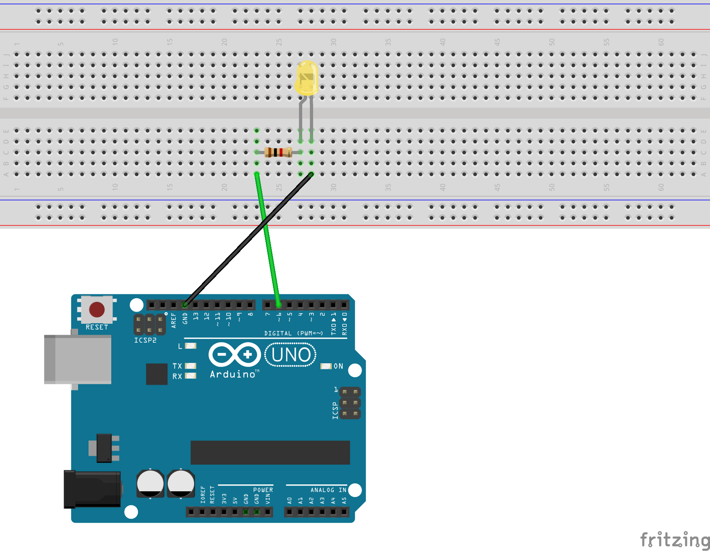

무엇을 하는 프로그램인가요?
브라우저와 Arduino가 USB 케이블로 텍스트를 한 줄씩 주고받습니다. 기능은 세 가지입니다.
원 클릭 → 켜기 / 끄기
화면의 원을 누르면 Arduino로 명령을 보냅니다.
슬라이더 → 밝기
0~255 값을 바뀔 때마다 보내 LED 밝기를 조절합니다.
Arduino 응답 → 화면
Arduino가 LED 상태를 알려 주면 원의 ON/OFF를 맞춥니다.
회로 구성
LED 하나와 저항 하나를 직렬로 연결했습니다. 밝기 조절을 위해 PWM(~ 표시)이 되는 D6 핀을 사용합니다.

전류가 흐르는 길
- D6Arduino ~6번 핀PWM 출력 핀 (초록 선)
- R저항LED에 흐르는 전류를 제한
- +LED 긴 다리 (애노드)전류가 들어가는 쪽
- −LED 짧은 다리 (캐소드)전류가 나가는 쪽
- GNDArduino GND회로가 닫힘 (검은 선)
PWM으로 밝기를 바꾸는 원리
디지털 핀은 5 V 아니면 0 V만 낼 수 있습니다. 그래서 아주 빠르게 켜고 끄면서 켜져 있는 시간의 비율을 바꿉니다. 비율이 클수록 눈에는 더 밝게 보입니다.
브라우저 ↔ Arduino 통신 규칙
메시지 하나 = 텍스트 한 줄(끝에 줄바꿈 \n). 통신 속도는 양쪽 모두 9600 baud입니다.
p5.js 스케치
Chrome / Edge
원 클릭 · 슬라이더
Arduino Uno R3
D6 핀 LED
명령을 읽고 출력
코드 설명
프로젝트는 파일 3개입니다. 핵심은 sketch.js이고, 복잡한 통신은 serial-helper.js가 맡습니다.
p5.js 라이브러리 → serial-helper.js → sketch.js 순서로 불러옵니다. 도우미를 먼저 불러야 스케치에서 쓸 수 있습니다.
포트 열기·닫기, 한 줄씩 읽기, 보내기를 담당하는 SerialHelper 클래스. (강의 예제 그대로 사용)
화면 그리기, 클릭·슬라이더 처리, 받은 메시지 해석. 이번 과제에서 직접 수정한 파일입니다.
sketch.js 한눈에 보기
함수 5개가 전역 변수를 바꾸고, draw()가 그 변수로 화면을 그립니다.
setup()
시작할 때 1번 · 캔버스, 버튼, 슬라이더 준비
draw()
1초에 약 60번 · 슬라이더 읽기 + 화면 그리기
sendBrightness()
draw()가 매번 호출 · 조건이 맞을 때만 PWM 전송
mousePressed()
마우스를 누를 때 · 원 안이면 ON/OFF 전송
receiveLine()
Arduino가 한 줄 보낼 때 · LED 상태 반영
SerialHelper
toggle() 연결/해제 · send() 보내기
전역 변수
모든 함수가 함께 사용함수 밖에서 let으로 선언해 어느 함수에서나 읽고 바꿀 수 있습니다. 새로 추가 표시는 원본에 없던 변수입니다.
| 변수 | 처음 값 | 기억하는 것 |
|---|---|---|
| serial | setup()에서 만듦 | Arduino와 통신하는 도우미 객체 |
| connectButton | setup()에서 만듦 | 연결 / 해제 버튼 |
| ledOn | false | LED가 켜졌는지 (true / false) |
| statusText | 'Arduino를 연결해 주세요.' | 화면 위쪽 상태 문구 |
| brightnessSliderNEW | setup()에서 만듦 | 밝기 슬라이더 |
| brightnessNEW | 255 | 현재 밝기 (0 꺼짐 ~ 255 최대) |
| lastSentNEW | -1 | 마지막으로 보낸 밝기 (-1 = 아직 안 보냄) |
| lastSendTimeNEW | 0 | 마지막으로 보낸 시각 (ms) |
| connectedAtNEW | 0 | 연결된 시각 (0 = 연결 전) |
setup()
시작할 때 1번캔버스, 통신 도우미, 버튼, 슬라이더를 준비합니다.
가로 600 × 세로 400 픽셀 그림판을 만듭니다.
속도 9600, 한 줄을 받으면 receiveLine, 상태가 바뀌면 statusText에 저장하도록 넘겨줍니다.
누를 때마다 serial.toggle()이 연결과 해제를 번갈아 합니다.
createSlider(최소, 최대, 처음 값, 간격). 범위 0~255는 Arduino analogWrite()와 같습니다.
draw()
1초에 약 60번 반복슬라이더 값을 읽어 전송을 시도하고, 현재 변수 값대로 화면을 다시 그립니다.
value()로 현재 값을 읽어 brightness에 저장하고 sendBrightness()를 부릅니다.
statusText가 바뀌면 다음 화면에 바로 보입니다.
lerpColor(A, B, 비율)는 두 색 사이의 색을 고릅니다. 비율 = brightness / 255 (0~1). 꺼져 있으면 회색.
밝기 숫자와 통신 규칙을 아래쪽에 씁니다.
sendBrightness()
draw()가 매번 호출1초에 60번 불리지만 실제로 보내는 건 네 관문을 모두 통과했을 때뿐입니다. 하나라도 걸리면 return으로 바로 끝냅니다.
실패 → 다시 시도
왜 2초? Uno는 시리얼 포트가 열리면 보드가 재시작합니다. 재시작 중에 보낸 글자는 사라지므로 잠시 기다립니다. 왜 50 ms? 슬라이더를 끌 때 값이 너무 많이 쏟아지지 않도록 1초에 최대 20번만 보냅니다.
serial.writer가 없으면 연결 전입니다. 다음 연결 때 처음부터 다시 보내도록 기록을 지웁니다.
millis()는 스케치가 시작된 뒤 흐른 시간(ms). 빼기로 경과 시간을 잽니다.
값이 그대로이거나 50 ms가 안 됐으면 보내지 않습니다.
await로 전송 결과를 기다립니다. 성공하면 0보다 클 때 켜짐, 실패하면 lastSent = -1로 되돌려 다시 시도합니다.
mousePressed()
마우스를 누를 때마다원 안을 눌렀을 때만 ON/OFF를 보내고, 전송에 성공했을 때만 화면 상태를 바꿉니다.
dist()로 원 중심(300, 190)까지 거리를 잽니다. 반지름 65(지름 130의 절반)보다 멀면 무시.
!는 true ↔ false 뒤집기.
삼항 연산자 조건 ? A : B로 'ON'/'OFF'를 고릅니다. 화면과 실제 LED가 어긋나지 않습니다.
receiveLine(line)
Arduino가 한 줄 보낼 때마다직접 부르지 않습니다. SerialHelper가 한 줄이 완성될 때마다 대신 호출합니다.
trim()으로 앞뒤 공백 제거, toUpperCase()로 대문자. " led: on " → "LED: ON"
Arduino가 보내는 LED: ON(콜론 뒤 공백 포함) 또는 ON을 받으면 켜짐. OFF도 같은 방식.
SerialHelper
serial-helper.js스케치에서는 아래 두 가지만 씁니다. 포트를 열고 데이터를 읽는 세부 과정은 이 클래스 안에 숨어 있습니다.
toggle()
끊겨 있으면 → 포트 선택 창 → 9600 baud로 열기 → 읽기 시작
연결돼 있으면 → 연결 해제
send(텍스트)
글자 끝에 \n을 붙여 보냅니다. 성공하면 true, 연결 전이거나 실패하면 false.
readLines()
받은 조각을 모았다가 \n이 나오면 한 줄로 잘라 receiveLine에 넘깁니다.
writer
연결되면 생기고 해제되면 null. sendBrightness()가 연결 여부를 확인할 때 사용합니다.
원본 예제에서 바꾼 점
강의 예제는 Arduino의 가변저항 값을 받아서 보여 줬다면, 이번 과제는 브라우저에서 밝기를 보내서 LED를 조절합니다.
LED 토글 + 가변저항 표시
- 가변저항 A0 값을 받아 막대로 표시
receiveLine()이 정규식으로 숫자 해석- 원 위치 (160, 175), 지름 110
- 원 색: 초록 / 회색 두 가지
LED 토글 + 밝기 슬라이더
- 슬라이더 0~255 →
PWM:값전송 sendBrightness()추가 (2초 대기·중복 방지·50 ms 제한)- 원을 가운데 (300, 190), 지름 130으로 이동
lerpColor()로 밝기만큼 진해지는 색
시연 영상
p5.js 화면에서 원을 누르고 슬라이더를 움직이면 브레드보드의 LED가 함께 반응합니다.
직접 실행하려면 Chrome 또는 Edge에서 demo 페이지를 열고 Arduino를 USB로 연결하세요. (Web Serial은 https 또는 localhost에서만 동작합니다.)